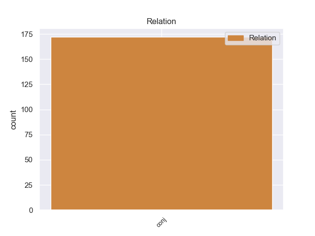
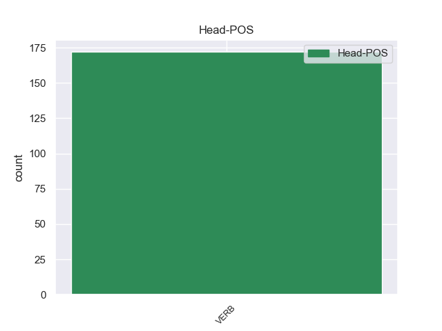

Distribution of features within this leaf



Agreement Rules sorted by frequency.
- When the dependent token is the conjunct(conj) of the head token,
1 Algunos _ _ _ _ 0 _ _ _
2 de _ _ _ _ 0 _ _ _
3 ellos _ _ _ _ 0 _ _ _
4 estaban _ _ _ _ 0 _ _ _
5 dispuestos _ _ _ _ 0 _ _ _
6 a _ _ _ _ 0 _ _ _
7 atacar _ _ _ _ 0 _ _ _
8 y _ _ _ _ 0 _ _ _
9 el _ _ _ _ 0 _ _ _
10 22 _ _ _ _ 0 _ _ _
11 de _ _ _ _ 0 _ _ _
12 junio _ _ _ _ 0 _ _ _
13 el _ _ _ _ 0 _ _ _
14 strategos _ _ _ _ 0 _ _ _
15 de _ _ _ _ 0 _ _ _
16 Macedonia _ _ _ _ 0 _ _ _
17 Juan _ _ _ _ 0 _ _ _
18 Aplakes _ _ _ _ 0 _ _ _
19 se _ _ _ _ 0 _ _ _
20 dirigió dirigir VERB _ Mood=Ind|Number=Sing|Person=3|Tense=Past|VerbForm=Fin 0 _ _ _
21 a _ _ _ _ 0 _ _ _
22 Miguel _ _ _ _ 0 _ _ _
23 y _ _ _ _ 0 _ _ _
24 dijo decir VERB _ Mood=Ind|Number=Sing|Person=3|Tense=Past|VerbForm=Fin 20 conj _ SpaceAfter=No
25 : _ _ _ _ 0 _ _ _
26 " _ _ _ _ 0 _ _ _
27 ¿ _ _ _ _ 0 _ _ _
28 Cuánto _ _ _ _ 0 _ _ _
29 vamos _ _ _ _ 0 _ _ _
30 a _ _ _ _ 0 _ _ _
31 esperar _ _ _ _ 0 _ _ _
32 y _ _ _ _ 0 _ _ _
33 morir _ _ _ _ 0 _ _ _
34 ? _ _ _ _ 0 _ _ _
Disagree Examples:
1 El _ _ _ _ 0 _ _ _
2 centrocampista _ _ _ _ 0 _ _ _
3 portugués _ _ _ _ 0 _ _ _
4 Tiago _ _ _ _ 0 _ _ _
5 ha _ _ _ _ 0 _ _ _
6 conseguido conseguir VERB _ Gender=Masc|Number=Sing|Tense=Past|VerbForm=Part 0 _ _ _
7 desvincular _ _ _ _ 0 _ _ _
8 se _ _ _ _ 0 _ _ _
9 de _ _ _ _ 0 _ _ _
10 la _ _ _ _ 0 _ _ _
11 Juventus _ _ _ _ 0 _ _ _
12 de _ _ _ _ 0 _ _ _
13 Turín _ _ _ _ 0 _ _ _
14 y _ _ _ _ 0 _ _ _
15 será ser VERB _ Mood=Ind|Number=Sing|Person=3|Tense=Fut|VerbForm=Fin 6 conj _ _
16 definitivamente _ _ _ _ 0 _ _ _
17 de _ _ _ _ 0 _ _ _
18 el _ _ _ _ 0 _ _ _
19 Atlético _ _ _ _ 0 _ _ _
20 de _ _ _ _ 0 _ _ _
21 Madrid _ _ _ _ 0 _ _ _
22 en _ _ _ _ 0 _ _ _
23 las _ _ _ _ 0 _ _ _
24 próximas _ _ _ _ 0 _ _ _
25 horas _ _ _ _ 0 _ _ _
26 . _ _ _ _ 0 _ _ _
1 Sin _ _ _ _ 0 _ _ _
2 embargo _ _ _ _ 0 _ _ _
3 , _ _ _ _ 0 _ _ _
4 no _ _ _ _ 0 _ _ _
5 todos _ _ _ _ 0 _ _ _
6 comparten compartir VERB _ Mood=Ind|Number=Plur|Person=3|Tense=Pres|VerbForm=Fin 0 _ _ _
7 este _ _ _ _ 0 _ _ _
8 punto _ _ _ _ 0 _ _ _
9 de _ _ _ _ 0 _ _ _
10 vista _ _ _ _ 0 _ _ _
11 y _ _ _ _ 0 _ _ _
12 ha _ _ _ _ 0 _ _ _
13 grabado grabar VERB _ Gender=Masc|Number=Sing|Tense=Past|VerbForm=Part 6 conj _ _
14 con _ _ _ _ 0 _ _ _
15 renombrados _ _ _ _ 0 _ _ _
16 artistas _ _ _ _ 0 _ _ _
17 como _ _ _ _ 0 _ _ _
18 Luciano _ _ _ _ 0 _ _ _
19 Pavarotti _ _ _ _ 0 _ _ _
20 y _ _ _ _ 0 _ _ _
21 Ruggiero _ _ _ _ 0 _ _ _
22 Ricci _ _ _ _ 0 _ _ _
23 . _ _ _ _ 0 _ _ _
1 Perdió perder VERB _ Mood=Ind|Number=Sing|Person=3|Tense=Past|VerbForm=Fin 0 _ _ _
2 la _ _ _ _ 0 _ _ _
3 virginidad _ _ _ _ 0 _ _ _
4 a _ _ _ _ 0 _ _ _
5 los _ _ _ _ 0 _ _ _
6 12 _ _ _ _ 0 _ _ _
7 años _ _ _ _ 0 _ _ _
8 y _ _ _ _ 0 _ _ _
9 a _ _ _ _ 0 _ _ _
10 menudo _ _ _ _ 0 _ _ _
11 veía ver VERB _ Mood=Ind|Number=Sing|Person=3|Tense=Imp|VerbForm=Fin 1 conj _ _
12 películas _ _ _ _ 0 _ _ _
13 porno _ _ _ _ 0 _ _ _
14 y _ _ _ _ 0 _ _ _
15 fantaseaba _ _ _ _ 0 _ _ _
16 con _ _ _ _ 0 _ _ _
17 ser _ _ _ _ 0 _ _ _
18 actriz _ _ _ _ 0 _ _ _
19 porno _ _ _ _ 0 _ _ _
20 . _ _ _ _ 0 _ _ _
1 Me _ _ _ _ 0 _ _ _
2 aloje _ _ _ _ 0 _ _ _
3 este _ _ _ _ 0 _ _ _
4 verano _ _ _ _ 0 _ _ _
5 con _ _ _ _ 0 _ _ _
6 unos _ _ _ _ 0 _ _ _
7 amigos _ _ _ _ 0 _ _ _
8 y _ _ _ _ 0 _ _ _
9 la _ _ _ _ 0 _ _ _
10 verdad _ _ _ _ 0 _ _ _
11 es _ _ _ _ 0 _ _ _
12 que _ _ _ _ 0 _ _ _
13 estaba _ _ _ _ 0 _ _ _
14 todo _ _ _ _ 0 _ _ _
15 muy _ _ _ _ 0 _ _ _
16 limpio _ _ _ _ 0 _ _ _
17 , _ _ _ _ 0 _ _ _
18 los _ _ _ _ 0 _ _ _
19 dueños _ _ _ _ 0 _ _ _
20 muy _ _ _ _ 0 _ _ _
21 amables _ _ _ _ 0 _ _ _
22 , _ _ _ _ 0 _ _ _
23 nosotros _ _ _ _ 0 _ _ _
24 ibamos ar VERB _ Mood=Ind|Number=Plur|Person=1|Tense=Imp|VerbForm=Fin 0 _ _ _
25 con _ _ _ _ 0 _ _ _
26 moto _ _ _ _ 0 _ _ _
27 y _ _ _ _ 0 _ _ _
28 no _ _ _ _ 0 _ _ _
29 hubo haber VERB _ Mood=Ind|Number=Sing|Person=3|Tense=Past|VerbForm=Fin 24 conj _ _
30 problema _ _ _ _ 0 _ _ _
31 en _ _ _ _ 0 _ _ _
32 que _ _ _ _ 0 _ _ _
33 nos _ _ _ _ 0 _ _ _
34 las _ _ _ _ 0 _ _ _
35 guardaran _ _ _ _ 0 _ _ _
36 en _ _ _ _ 0 _ _ _
37 su _ _ _ _ 0 _ _ _
38 garaje _ _ _ _ 0 _ _ _
39 . _ _ _ _ 0 _ _ _
1 Pero _ _ _ _ 0 _ _ _
2 aún _ _ _ _ 0 _ _ _
3 quedaba quedar VERB _ Mood=Ind|Number=Sing|Person=3|Tense=Imp|VerbForm=Fin 0 _ _ _
4 un _ _ _ _ 0 _ _ _
5 último _ _ _ _ 0 _ _ _
6 día _ _ _ _ 0 _ _ _
7 de _ _ _ _ 0 _ _ _
8 fiesta _ _ _ _ 0 _ _ _
9 y _ _ _ _ 0 _ _ _
10 Arturo _ _ _ _ 0 _ _ _
11 vuelve volver VERB _ Mood=Ind|Number=Sing|Person=3|Tense=Pres|VerbForm=Fin 3 conj _ _
12 a _ _ _ _ 0 _ _ _
13 pedir _ _ _ _ 0 _ _ _
14 permiso _ _ _ _ 0 _ _ _
15 para _ _ _ _ 0 _ _ _
16 invitar _ _ _ _ 0 _ _ _
17 a _ _ _ _ 0 _ _ _
18 la _ _ _ _ 0 _ _ _
19 Lucinda _ _ _ _ 0 _ _ _
20 , _ _ _ _ 0 _ _ _
21 esta _ _ _ _ 0 _ _ _
22 vez _ _ _ _ 0 _ _ _
23 a _ _ _ _ 0 _ _ _
24 la _ _ _ _ 0 _ _ _
25 fiesta _ _ _ _ 0 _ _ _
26 en _ _ _ _ 0 _ _ _
27 casa _ _ _ _ 0 _ _ _
28 de _ _ _ _ 0 _ _ _
29 doña _ _ _ _ 0 _ _ _
30 Rosario _ _ _ _ 0 _ _ _
31 , _ _ _ _ 0 _ _ _
32 una _ _ _ _ 0 _ _ _
33 devota _ _ _ _ 0 _ _ _
34 de _ _ _ _ 0 _ _ _
35 la _ _ _ _ 0 _ _ _
36 Virgen _ _ _ _ 0 _ _ _
37 en _ _ _ _ 0 _ _ _
38 cuyo _ _ _ _ 0 _ _ _
39 hogar _ _ _ _ 0 _ _ _
40 había _ _ _ _ 0 _ _ _
41 construido _ _ _ _ 0 _ _ _
42 una _ _ _ _ 0 _ _ _
43 capilla _ _ _ _ 0 _ _ _
44 . _ _ _ _ 0 _ _ _